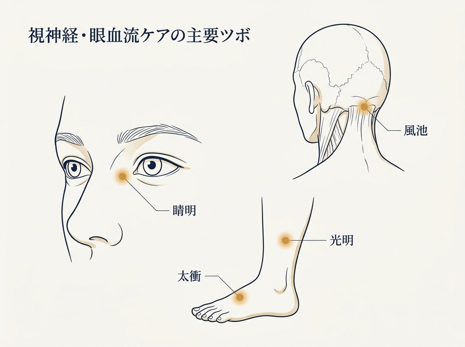

球後視神経炎の鍼灸
視神経乳頭より奥の視神経に炎症が起きる疾患です。急性期は専門医のステロイド治療を最優先とし、安定期の回復・心理面を支えます。


院長YouTube解説・関連動画
公開日：２０２１年 ６月１１日
更新日：２０２３年 ８月 １日
本日は球後視神経炎について解説させていただきます。
☆本記事の内容
- •球後視神経炎とは
- •球後視神経炎の原因
- •球後視神経炎の症状
- •球後視神経炎の改善方法
- •球後視神経炎のまとめ
- •球後視神経炎は、視神経に炎症が起こる病気
- •球後視神経炎の原因は不明であることが多い
- •球後視神経炎の主な症状は視力障害
- •改善するためには副腎皮質ステロイド薬を使う
- •球後視神経炎を調べるときには
銀座そうぜん鍼灸院の宗前です。
このページを書いている私は、鍼灸師として１３年、担当した利用者様数８０，０００人を誇り、病気の休職者３００人を社会復帰できるまで回復させてきた実績があります。
球後視神経炎の原因は不明であることが多い
球後視神経炎の原因の多くは原因不明です。原因がわかっている場合に多い原因は、精神的な影響や視神経の血管に問題が起こること、視神経に腫瘍ができることです。
眼窩や副鼻腔の炎症、喫煙、メチルアルコール、鉛などの中毒で起こることが原因で球後視神経炎が起こることや何かの要因で免疫系が自分の組織に抗体を作ってしまうことが原因で球後視神経炎が起きることもあります。
場合によっては、多発硬化症の前兆や症状の一部として現れることもあります。
急激に視力が低下した時、調べても特に問題がない場合に球後視神経炎と判断されることもあります。しかし、この場合は、球後視神経炎以外の病気が関係していることもあるため、注意が必要です。
多発性硬化症（MS）: 球後視神経炎は多発性硬化症の初発症状としてよく見られます。
神経脈絡膜炎: 視神経に影響を与えることがあります。
ウイルス性感染: サイトメガロウイルス、麻疹、風疹ウイルスなど。
細菌性感染: シフィリス、結核、リステリアなど。
サルコイドーシス: 全身に多発する肉芽腫を特徴とする炎症性の病気。
ウェゲナーの肉芽腫症: 呼吸器と腎臓に影響を及ぼす炎症性の病気。
エタノール: アルコール中毒が引き起こす視神経障害。
メタノール: 産業用アルコールに含まれる場合があり、視神経に極度の障害を引き起こす。
抗生物質: 特定の抗生物質が視神経障害を引き起こす可能性がある。
ワクチン接種後: 稀に視神経炎が報告されているが、因果関係は明確でない。
レーベル遺伝性視神経症（LHON）: 遺伝的に視神経が弱くなっている症例も報告されています。
不明（Idiopathic）: 多くの症例で、具体的な原因は特定されていない。
球後視神経炎の主な症状は視力障害
球後視神経炎の主な症状は視力障害です。発症すると急激に視力が下がっていき、1日〜2日で最大まで視力が落ちます。
視力の低下の程度は様々で、完全に失明してしまうこともあります。多くの場合は、眼の痛みや頭痛が起きます。眼の痛みは眼球が運動をする時、強い痛みを感じることが多いです。
視力低下: 突然あるいは数日間で急激に視力が低下することが多い。
痛み: 眼球を動かすと痛みが出ることがある。
色覚の異常: 色の認識が乱れ、特に赤と緑の識別が難しくなることがある。
中心暗点（スコトーマ）: 視野の中心が暗くなる、または欠けるように感じる。
フラッシュ、光のひらめき: 突然の明るい光や閃光を感じることがある。
対比感度の低下: 物と物の境界がはっきりしなくなる。
二重視: 一つの物体が二つに見えることがある。
このような症状は、日常生活:や仕事などに影響を与えることがあります。視力の低下や視野の異常は、読書、運転、歩行に影響が出たり細かい作業やコンピューター作業が困難になったりすることがあるのです。症状が急に出ると、不安やストレスを感じることがあります。
一部では症状が一時的で数週間で回復することもあれば、長期にわたって持続する場合もあります。
球後視神経炎は潜在的に深刻な症状を引き起こす可能性があります。症状が出たら早急に専門医の判断を受けることが重要です。
球後視神経炎を改善するためには、原因となっていることを改善することが必要です。
原因となっている病気がある場合は、原因となっている病気を改善することが大切なのです。合わせて、副腎皮質ホルモン剤やビタミンＢ１やＢ１２、血行促進剤などを使って改善に取り組みます。
原因がわからない場合も副腎皮質ステロイド薬を点滴して改善を行います。副腎皮質ステロイド薬では、視力の低下を抑えて改善するスピードを早めます。さらに、多発性硬化症の予防にもつながります。
球後視神経炎は改善を行うことで、完全に視力が完全に回復することもあります。しかし場合によっては視神経が萎縮してしまい回復しないこともあるため医師と相談の上改善に取り組みましょう。
精密な判断が最初のステップであり、これには視力テスト、視野テスト、MRI、脳波、視神経造影などが含まれる場合があります。改善はすぐに始まることが多いです。
ステロイド: メチルプレドニゾロン（IVMP）などの高用量ステロイドが点滴で投与されることが多い。これは炎症を抑制し、視力を早期に回復させる目的があります。
免疫抑制薬: 多発性硬化症（MS）やその他の自己免疫の病気が関与している場合、免疫抑制薬が選択されることもあります。
痛み止め: NSAIDや他の鎮痛薬が痛みの管理のために用いられる場合があります。
長期改善とフォローアップ
再発予防: 特に多発性硬化症のリスクが高い場合、長期的な免疫法が計画されることがあります。
視力トレーニング: 一部では視力回復を促すリハビリテーションが推奨されることがあります。
免疫グロブリン法: 高用量の免疫グロブリンが静脈内に投与される手法も研究されていますが、一般的な改善法とは言えません。
ホリスティックアプローチ
栄養: 抗酸化物質やビタミンが視神経の健康に良い影響を与える可能性があります。
心理的サポート: 症状が重度でストレスや不安を感じる場合、心理的サポートが必要な場合もあります。
球後視神経炎の改善は症状や状態、合併症、関連する病気によって大きく変わる可能性があります。
カウンセリング: 専門の心理カウンセラーや心理専門家とのセッションで、患者の感じる不安やストレス、病気に対する不確かな気持ちなどを話し合います。
認知行動法（CBT）: ネガティブな思考や行動パターンに対処するスキルを磨きます。これは、病状や改善に対する思考方法に影響を与えることが多いです。
家族・友人のサポート: 病気に対する理解を深め、サポート体制を築くために家族や友人もセッションに参加する場合があります。
集団セラピー: 同じような問題を抱える他の人々とのグループセッションで、お互いに経験やコツを共有します。
リラクゼーションテクニック: マインドフルネス、瞑想、深呼吸などのリラクゼーションテクニックも紹介されることがあります。
ストレスの軽減: 心理的サポートが与えられることで、多くの人がストレスや不安を軽減する報告をしています。
コプリングスキル:自らの病状や症状に対処するスキルが向上します。
家族や友人との関係性強化: 家族や友人もこのプロセスを通じて理解し、適切にサポートする方法を学びます。
全体的なQOL（Quality of Life）向上: 不安やストレスの管理がうまくいくと、多くの場合、全体的な生活の質が向上します。
重度の症状に苦しむ場合: 症状が重いと、ストレスや不安が増加する傾向があります。
改善選択肢に不安を感じる場合: 複数の改善の選択肢や不確かな結果に対する不安がある場合。
家庭や職場でのサポートが不足している場合: ソーシャルサポートが不足していると、心理的な負担が増加します。
以前から心的健康問題を有する場合: 既存の心的健康問題がある場合、新たな状況はその状態を悪化させる可能性があります。
心理的サポートは、本人だけでなく家族やケアギバーにも多くの場合有益です。球後視神経炎はしばしば視力の低下やその他の重大な症状を引き起こすため、心理的な対応が特に重要です。
球後視神経炎を調べる時には、まず、眼底を調べて眼底の腫脹を調べます。炎症が視神経のみ起きている場合は眼底には問題が現れないこともあります。そのため、瞳孔の対光の反応の差も調べます。
球後視神経炎では画像での判断も行います。画像では、視神経の腫大や側脳室の脱髄巣があるかないかを調べます。
▼ 詳しく知りたい項目だけタップして開けます（全項目の医学解説を収録）
01. 原因とメカニズム
なぜ症状が起きるのか・鍼灸の作用機序を読む
▼
01. 原因とメカニズム
なぜ症状が起きるのか・鍼灸の作用機序を読む
球後視神経炎は、視神経乳頭よりも奥から脳へ至る視神経に炎症が生じる疾患で、多くは片眼に急激な視力低下と眼痛・頭痛をもたらします。原因が特定できない特発性のほか、多発性硬化症や視神経脊髄炎スペクトラム障害の初発症状として現れることも多く、感染症や自己免疫疾患、薬剤・中毒性が関与する場合もあります。眼底所見に異常が出にくいため、瞳孔対光反射やMRI検査による専門医の精密診断と早期の副腎皮質ステロイド治療が不可欠です。
なぜ鍼灸で改善へ向かうのか？（作用機序の図解）
球後視神経炎に対する鍼灸は、後頸部〜眼周囲の微小循環と毛様体筋・自律神経調整機序を通じて、お体本来の回復力を引き出します。
眼球周囲の危険な深刺しを避け、風池・天柱・合谷・太衝など安全な経穴へ繊細に施術します。
PC・スマホ作業や緊張で固まった首深層筋と眼輪筋周囲の血流を促し、重だるさを軽減します。
交感神経優位による目の乾き・ピント調節疲労を鎮め、涙液分泌とリラックス反応を助けます。
眼科の点眼・定期検査を最優先としつつ、日々の眼精疲労や頭痛・肩こりの連鎖を整えます。
02. よくあるお悩み
このような症状はありませんか？（4項目）
▼
02. よくあるお悩み
このような症状はありませんか？（4項目）
- ✓数日のうちに片目の視力が急激に低下した
- ✓目を動かすと目の奥に痛みや頭痛を感じる
- ✓視野の中心が暗く欠けたり、色の見え方が薄くなったりする
- ✓眼底検査では異常が少ないのに見えにくさが強い
03. 当院の施術アプローチ
施術の進め方・改善のポイントを見る
▼
03. 当院の施術アプローチ
施術の進め方・改善のポイントを見る
04. ツボ詳細・セルフケア一覧
神経免疫難病・全身倦怠感の土台づくりツボ図解（6穴）
▼
04. ツボ詳細・セルフケア一覧
神経免疫難病・全身倦怠感の土台づくりツボ図解（6穴）
実際の施術ではお一人おひとりの体質・症状に合わせて選穴しますが、多発性硬化症・重症筋無力症・膠原病等の疲労・自律神経サポートの臨床でよく用いられる代表的なツボの目安です。
| ツボ名 | 位置の目安 | 主な狙い | セルフケアの注意点 |
|---|---|---|---|
| 百会（ひゃくえ） | 頭頂部の中央 | 中枢疲労の緩和・自律神経バランス調整 | 疲労が強い日は極低刺激に留めます。 |
| 気海（きかい） | おへそから指2本分下 | 全身の回復力・呼吸の深さのサポート | 手のひらで温める（手当て）だけでも有効です。 |
| 関元（かんげん） | おへそから指4本分下 | 深部体温・下腹部の巡りと体力維持 | 熱いお灸は避け心地よい温かさに留めます。 |
| 足三里（あしさんり） | 膝の下外側、指4本分下 | 胃腸吸収と全身の体力・倦怠感ケア | 刺激過多にならないよう短時間で行います。 |
| 三陰交（さんいんこう） | 内くるぶしの上から指4本分上 | 末梢循環・睡眠の質・ホルモン自律神経の調和 | 妊娠中は強い刺激を避けます。 |
| 太渓（たいけい） | 内くるぶしとアキレス腱の間のくぼみ | 深い疲労感・冷え・回復力の底上げ | 優しく温めながら深呼吸を合わせます。 |
05. 医学的根拠・国際査読論文（PubMed / Cochrane）
科学的エビデンス・出典リンク一覧（2件）
▼
05. 医学的根拠・国際査読論文（PubMed / Cochrane）
科学的エビデンス・出典リンク一覧（2件）
国際的な医学データベース（PubMed・Cochrane等）で報告されている緑内障・眼圧・視神経領域の代表的な査読済み鍼灸研究をまとめています（標準治療との併用や研究上の限界を含めて正確に掲載）。
| 年・研究デザイン | 対象・規模 | 主な結果 | 限界・出典 |
|---|---|---|---|
| 2020年 Cochraneレビュー | 緑内障・高眼圧症 3 RCTs（n=137） | 眼圧・視野に対する補助的検討を総括。 | 確実性は極めて低く、眼科での点眼・手術管理が最優先。 Cochrane (PMID: 32032457) |
| 2025年 メタ解析 | 変性眼疾患 21研究（緑内障・黄斑変性等） | 標準眼科治療との併用で視力・眼血流指標の補助的改善を示唆。 | 研究の異質性が高く標準治療の代替にはならない。 Complement Ther Med (PMID: 40850524) |
参考文献・出典
- 2020年 Cochraneレビュー（緑内障・高眼圧症 3 RCTs（n=137））— Cochrane (PMID: 32032457)
- 2025年 メタ解析（変性眼疾患 21研究（緑内障・黄斑変性等））— Complement Ther Med (PMID: 40850524)
06. よくある質問（FAQ）
よくあるご質問を見る（2件）
▼
06. よくある質問（FAQ）
よくあるご質問を見る（2件）
Q. 急に片目が見えにくくなり目の奥が痛みます。鍼灸で対応できますか？
いいえ、球後視神経炎の急性期は失明予防や中枢神経疾患の鑑別のため、直ちに眼科・神経内科での検査とステロイド治療が必要です。急性期は鍼灸禁忌となります。
Q. 退院後の安定期に鍼灸を受けることは可能ですか？
炎症が落ち着き主治医の許可が得られていれば、残る疲労感や首肩こり、ストレスによる自律神経の乱れを整える補完的ケアとして対応可能です。
あわせて読まれる関連疾患（眼のお悩み）
網膜の中心である黄斑に丸い穴が開き中心視力が低下する病気です。早期の眼科手術を最優先に、術後安定期の疲労をケアします。
加齢に伴い黄斑部が障害され中心視力が低下する病気です。眼科での標準治療を最優先に、安定期の血流・体調ケアを支えます。
黄斑部に血漿成分が漏れ出し嚢胞状のむくみが生じる病気です。眼科での標準治療を最優先に、安定期の疲労・体調を支えます。
白目やまぶた裏の粘膜が炎症を起こす病気です。感染性は眼科受診を最優先に、アレルギー性の体質・免疫バランスを整えます。
片眼の外傷や手術後に健常眼にも自己免疫性炎症が生じる重篤疾患です。眼科治療最優先で安定期の補完ケアを支えます。
角膜にアミロイドが沈着し強いまぶしさや異物感が生じる指定難病です。眼科治療最優先で安定期の疲労や首肩こりを支えます。
CLINICAL RECOVERY CASES
✨ 実際の臨床改善事例・回復経過を見る
銀座本院をはじめ各院での実際の改善事例を症状別に絞り込んでご確認いただけます。
おひとりで悩まず、まずはご相談ください
銀座本院・川口・大宮・横浜・博多・田無の各院でご予約を承っております。